دليل استخدام منصة سراج
شرح كامل للمنصة: الدخول، الإضافة إلى الشاشة الرئيسية، رفع الإنجاز، التقييم، التقويم، والتقرير
is.gd/z1gJSa- ما هي منصة سراج؟
- الدخول وتفعيل الحساب
- الإضافة إلى الشاشة الرئيسية
- الرسالة التحفيزية
- الصفحة الرئيسية والتنبيهات
- المسار والمتطلبات
- رفع متطلب (المستفيد)
- الرصد الأسبوعي
- التقييم (المتابع)
- التقويم
- ملف الإنجاز
- محتوى المشروع
- تقرير المستفيد والطباعة
- إعدادات المتابع
- أسئلة شائعة
ما هي منصة سراج؟
منصة متابعة لمشروع «سراج» التأهيلي الممتد ستة أشهر. تعمل من المتصفح على الجوال والكمبيوتر، وفيها حسابان:
| الحساب | ما يفعله |
|---|---|
| المستفيد | يسجّل وجه التفسير اليومي، يرفع ورقة التدبر والملخص الفقهي أسبوعياً، وملخص مصدر اللقاء والتقرير الشهري، ويتلقى التقييم والتنبيهات. |
| المتابع والمقيّم | يرى التقدم لحظة بلحظة، يعتمد المرفوعات أو يطلب استكمالها مع تقييم بالنجوم، يرسل التذكيرات، يضبط المواعيد، ويطبع التقرير. |
الدخول وتفعيل الحساب
أول مرة (مرة واحدة فقط)
- افتح رابط المنصة.
- اضغط أول مرة؟ فعّل حسابك برمز التفعيل.
- اكتب بريدك الإلكتروني، ثم رمز التفعيل الذي وصلك، ثم اختر كلمة مرور من 8 أحرف على الأقل.
- اضغط تفعيل الحساب والدخول.
بعد ذلك
اكتب البريد وكلمة المرور واضغط دخول. يبقى الحساب مسجّلاً في المتصفح حتى تختار تسجيل الخروج.
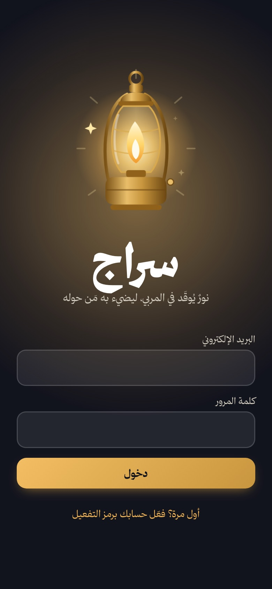
إضافة المنصة إلى الشاشة الرئيسية
بعد الإضافة تظهر أيقونة «سراج» بين تطبيقاتك وتفتح المنصة بملء الشاشة كأنها تطبيق، دون شريط المتصفح.
- افتح رابط المنصة في متصفح Safari.
- اضغط زر المشاركة (المربع الذي يخرج منه سهم للأعلى) أسفل الشاشة.
- مرّر القائمة واختر إضافة إلى الشاشة الرئيسية.
- اضغط إضافة أعلى الشاشة.
- افتح رابط المنصة في Chrome.
- اضغط القائمة (النقاط الثلاث ⋮) أعلى الشاشة.
- اختر إضافة إلى الشاشة الرئيسية أو تثبيت التطبيق.
- أكّد بالضغط على إضافة أو تثبيت.
- افتح رابط المنصة.
- اضغط أيقونة التثبيت في طرف شريط العنوان، أو من القائمة ⋮ اختر تثبيت سراج.
- تُفتح المنصة في نافذة مستقلة ولها أيقونة على سطح المكتب.
الرسالة التحفيزية
عند كل دخول تظهر شاشة كاملة تخاطبك باسمك الأول برسالة تتبدل في كل مرة، وتحتها سطر عن وضعك الفعلي: عدد المتطلبات التي بانتظارك، أو وِرد اليوم، أو نسبة ما أنجزت.
اضغط لنبدأ أو أي مكان في الشاشة للمتابعة. ويمكن إعادة عرضها من نافذة الحساب بزر رسالة اليوم.
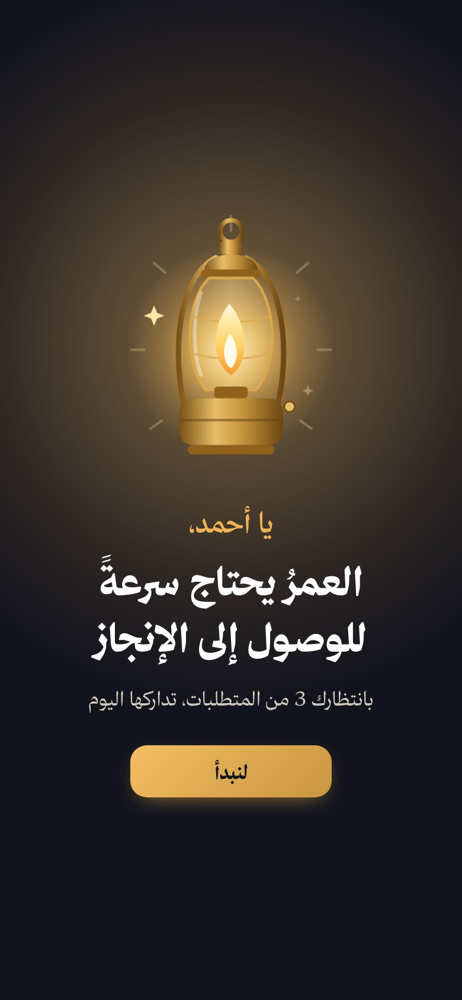
الصفحة الرئيسية والتنبيهات
- بطاقة التقدم: اليوم والأسبوع والشهر من المشروع، ونسبة الإنجاز داخل حلقة يتوهج فيها السراج كلما تقدمت، مع نسبة الالتزام، والأيام المتتالية، ومتوسط التقييم، وعدد الأوجه.
- وِرد اليوم: رقم وجه التفسير وصفحته، وزر أتممتُه لتسجيله بضغطة.
- التنبيهات: المتأخر (أحمر)، ما يحتاج استكمالاً (برتقالي)، ما يقترب موعده (ذهبي)، اللقاء الشهري القريب (كحلي)، ونتائج التقييم والرسائل. اضغط أي تنبيه ليفتح المتطلب مباشرة.
- مطلوب هذا الأسبوع والجدارات الخمس ومسار المصابيح: مصباح لكل أسبوع يضيء عند اكتماله.
- الجرس أعلى الشاشة: كل التنبيهات السابقة، وزر لإرسال رسالة قصيرة للطرف الآخر.
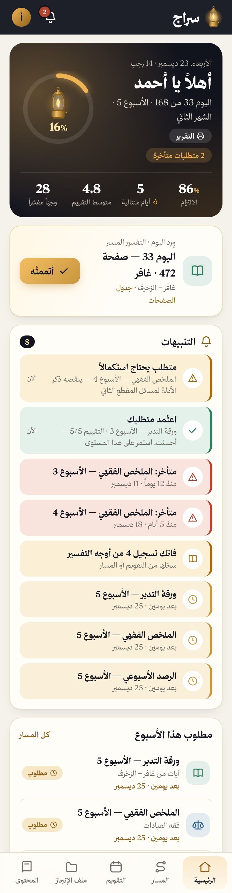
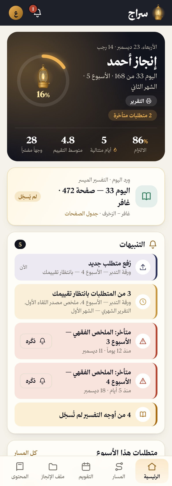
المسار والمتطلبات
صفحة المسار تعرض الأشهر الستة، ولكل شهر أسابيعه الأربعة:
- أيام التفسير السبعة: يضغط المستفيد اليوم ليسجّله أو يستدرك يوماً فائتاً.
- متطلبات الأسبوع: ورقة التدبر، الملخص الفقهي، الرصد الأسبوعي، قراءة ربع المقرر.
- قبل اللقاء الشهري: ملخص مصدر اللقاء والتقرير الشهري.
حالات المتطلب
| قادم | لم يحن أسبوعه بعد |
|---|---|
| مطلوب | في أسبوعه الحالي |
| بانتظار التقييم | رُفع ولم يُقيَّم |
| معتمد | اعتمده المتابع |
| يحتاج استكمالاً | أعاده المتابع بملاحظة |
| متأخر | فات موعده ولم يُرفع |
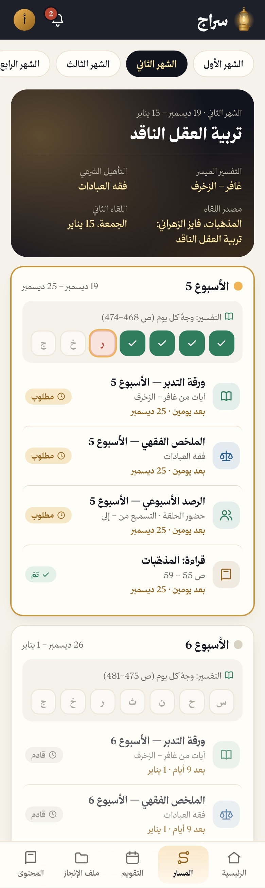
رفع متطلب (المستفيد)
- اضغط المتطلب من الرئيسية أو المسار أو التقويم.
- اكتب الملخص في الخانة، أو أرفق ملفاً (PDF أو صورة أو Word حتى 20 م.ب)، أو كليهما.
- اضغط رفع. يصل تنبيه للمتابع فوراً.
قراءة المقرر لا تحتاج رفعاً: يكفي زر أتممتُ قراءة هذا المقرر.
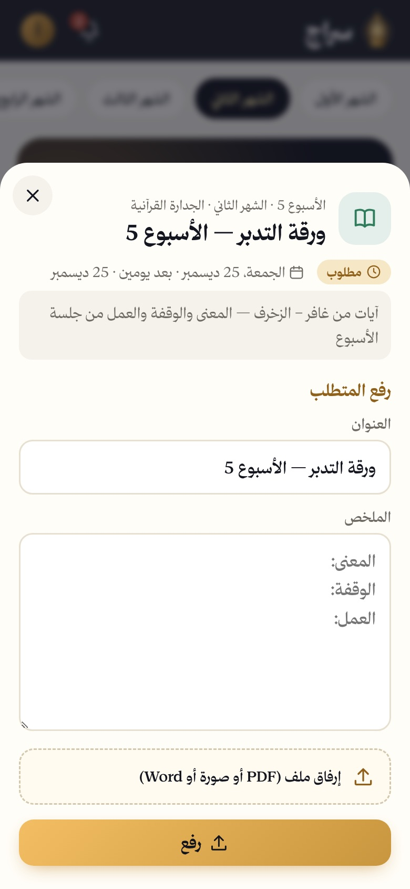
الرصد الأسبوعي: الحضور والتسميع
متطلب أسبوعي يرفعه المستفيد عن حلقته:
- افتح «الرصد الأسبوعي» من متطلبات الأسبوع في الرئيسية أو المسار.
- اختر حضور الحلقة: حاضر أو غائب بعذر أو غائب.
- اكتب التسميع من وإلى (مثل: يس آية 1 إلى يس آية 40)، وملاحظة إن وُجدت.
- اضغط رفع الرصد. يصل المتابعَ تنبيهٌ بالحضور والتسميع.
يمكن تعديل الرصد بعد حفظه. ولا يحتاج تقييماً: يُحسب منجزاً بمجرد رفعه، ويظهر متأخراً إذا فات أسبوعه دون رفع.
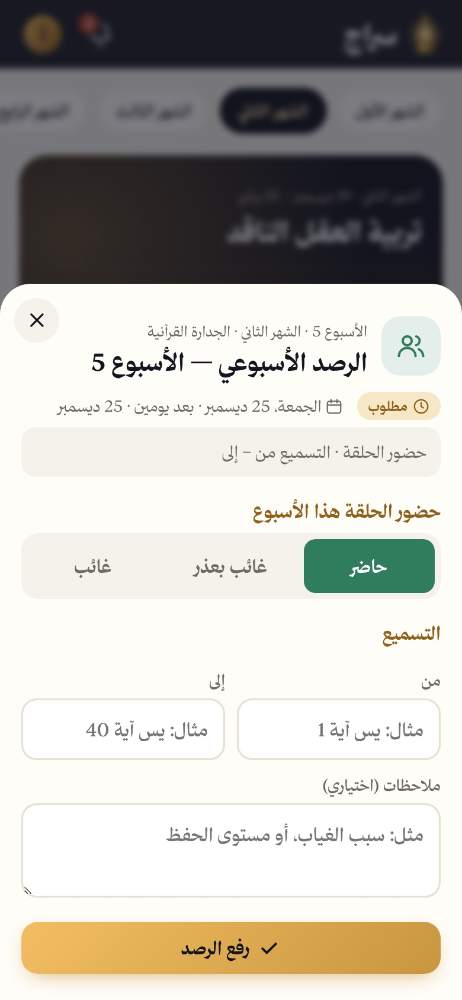
التقييم (المتابع)
- افتح المتطلب من تنبيه «بانتظار تقييمك» أو من أي صفحة.
- اقرأ الملخص وافتح الملف المرفق.
- اختر التقييم بالنجوم واكتب ملاحظتك.
- اضغط اعتماد، أو يحتاج استكمالاً (ويلزم معه كتابة المطلوب).
يصل التقييم للمستفيد تنبيهاً في رئيسيته. وللمتطلبات المتأخرة زر ذكّره يرسل له تذكيراً.
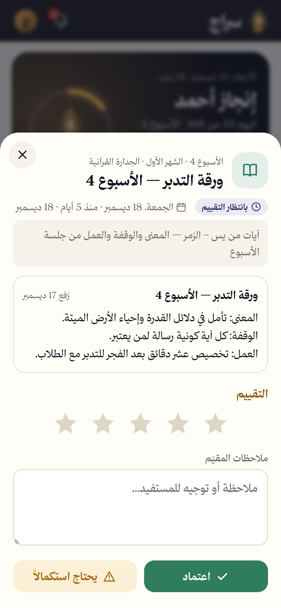
التقويم
تقويم شهري بالتاريخين الميلادي والهجري:
- الأيام الخضراء: وجه مُسجَّل. الحمراء: يوم فائت.
- النقاط: كحلي للقاء، ذهبي لمتطلب، أخضر لمُنجز، أحمر لمتأخر.
- اضغط أي يوم لترى ما فيه، وسجّل وجهه منه.
للمتابع: زر إضافة موعد في هذا اليوم يضيف موعداً ويبلّغ المستفيد به.
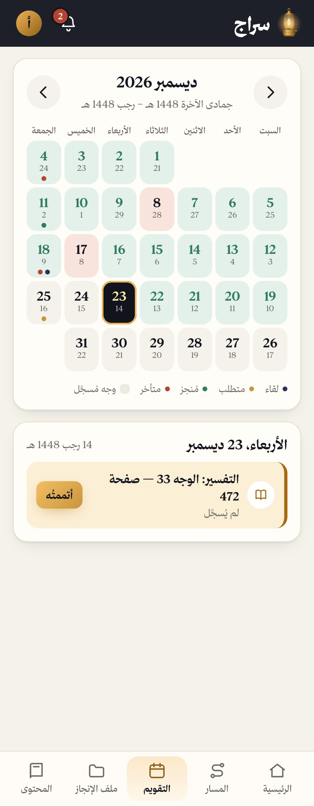
ملف الإنجاز
أرشيف كل ما رُفع مع حالته وتقييمه، ويمكن تصفيته حسب النوع: ورقة التدبر، الملخص الفقهي، ملخص مصدر اللقاء، التقرير الشهري، الرصد الأسبوعي. تبقى الملفات مرجعاً بعد انتهاء المشروع.
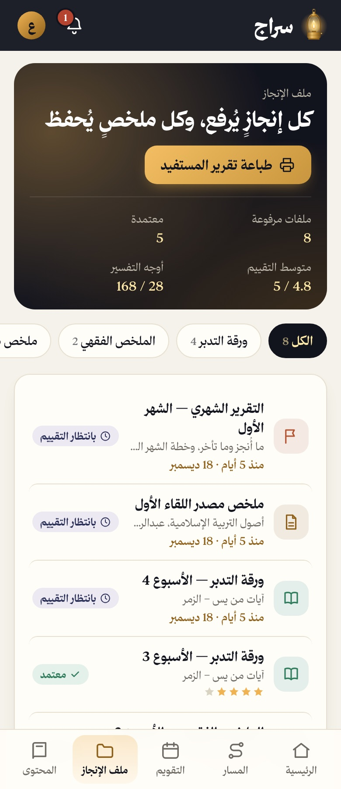
محتوى المشروع والمراجع
صفحة المحتوى تضم وثيقة المشروع كاملة، وشريط العناوين أعلاها ينقلك لأي قسم:
- المراجع: كل كتاب وسلسلة ومقالة مع صفحاتها وموضعها من الخطة، وروابط السلاسل المرئية والمقالة. ويستطيع المتابع أن يرفق لكل مرجع رابطاً أو ملف PDF بزر إضافة رابط أو ملف ليفتحه المستفيد من المنصة مباشرة. وزر رفع كتب المراجع دفعة واحدة يرفع عدة كتب معاً ويربط كل كتاب بمرجعه من اسم الملف.
- صفحات التفسير لكل يوم: جدول للأيام الـ168 فيه التاريخ ورقم صفحة المصحف والسورة، مع تمييز اليوم الحالي وما أُنجز وما فات.
- بقية الوثيقة: الفكرة، الجدارات الخمس، المسار الزمني، خطة اللقاءات، جدول القراءة، الإيقاع الأسبوعي، مسؤوليات الأطراف، والمخرج النهائي.
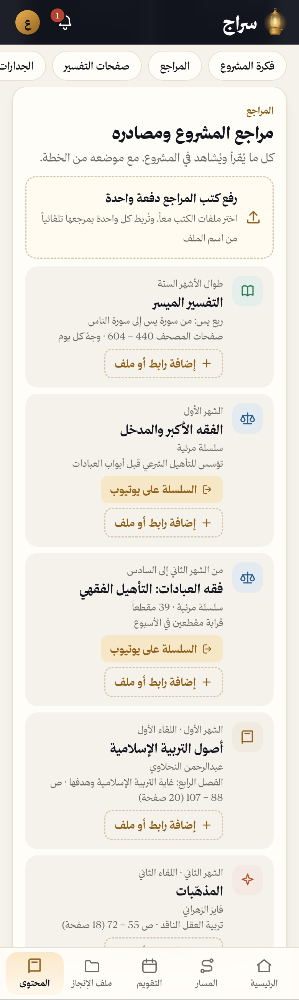
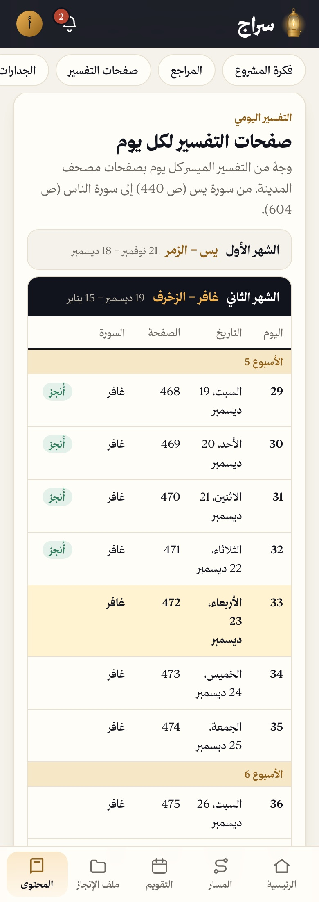
تقرير المستفيد والطباعة
يُفتح من زر التقرير في بطاقة الرئيسية، أو من ملف الإنجاز، أو من نافذة الحساب. يحتوي:
- ستة مؤشرات: الإنجاز الكلي، الالتزام، متوسط التقييم، الأوجه، المرفوعات، المتأخرات.
- التقدم الفعلي مقابل المخطط، وتقدّم الجدارات الخمس.
- خريطة الورد اليومي للأسابيع الأربعة والعشرين.
- جدول الإنجاز الشهري، وجدول الرصد الأسبوعي (الحضور والتسميع ونسبة الحضور).
- سجل المرفوعات بتقييمها وملاحظات المقيّم.
- خانة ملاحظات يكتب فيها المتابع توصياته قبل الطباعة، وخانتا توقيع.
الطباعة أو الحفظ PDF
- اضغط طباعة / حفظ PDF.
- اختر الطابعة، أو «حفظ بتنسيق PDF».
- على الجوال: من نافذة الطباعة اختر المشاركة أو الحفظ في الملفات.
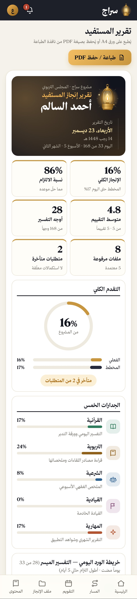
إعدادات المتابع
اضغط دائرة الحساب أعلى الشاشة:
- الأسماء: اسم المتابع واسم المستفيد كما يظهران في المنصة والتقرير.
- تاريخ الانطلاق: تغييره يعيد حساب الأسابيع ومواعيد اللقاءات.
- مواعيد اللقاءات الستة: وتغيير أي موعد يبلّغ المستفيد.
- رمز تفعيل المستفيد: يظهر إلى أن يُستخدم.
- خط المنصة: ارفع ملفات خط ثمانية الخمسة (Light, Regular, Medium, Bold, Black) مرة واحدة ليظهر الخط للحسابين.
أسئلة شائعة
نسيت كلمة المرور؟
لا توجد استعادة ذاتية حالياً؛ تُعاد من مدير المنصة.
لم يظهر لي تنبيه جديد؟
التنبيهات تُحدَّث فورياً والمنصة مفتوحة، وعند العودة إليها. أغلق المنصة وافتحها إن طال الانتظار.
فاتني تسجيل وجه أمس؟
سجّله من التقويم أو من أيام الأسبوع في صفحة المسار.
هل يرى أحدٌ غيرنا البيانات؟
لا. البيانات والملفات محفوظة خلف تسجيل الدخول للحسابين فقط.